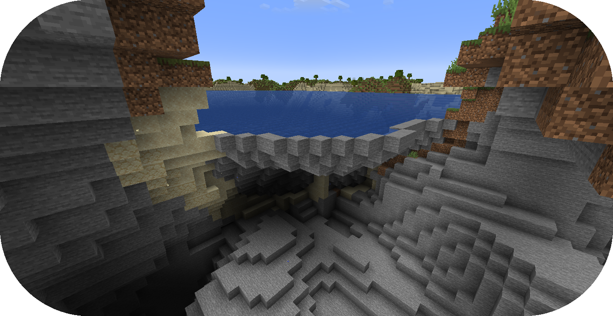

Creating Carving From Scratch¶
This guide will continue the process of creating a new Terra config pack from the beginning with creating caves through carving.
If you haven’t already, please read the Config Development Introduction & Creating A Pack From Scratch for more information before continuing.
If you’re stuck or need an example, you can find reference config packs for this guide on the GitHub repo.
Setting up Carving¶
PROCEDURE
1. Add cached sampler¶
Utilizing a cached sampler will make config development easier when creating noise sampler expressions.
Cached samplers allow a sampler to be used anywhere in the pack for noise sampler expressions and the TerraScript Sampler Function.
Cached samplers are extremely convenient especially when you have various expressions that utilize the same noise sampler.
Open your pack manifest in your editor of choice.
Add the following lines below to cache some samplers.
1id: YOUR_PACK_ID
2
3addons:
4 ...
5
6stages:
7 ...
8
9samplers:
10 simplex:
11 dimensions: 2
12 type: FBM
13 octaves: 4
14 sampler:
15 type: OPEN_SIMPLEX_2
16 frequency: 0.0075
17 simplex3:
18 dimensions: 3
19 type: FBM
20 octaves: 4
21 sampler:
22 type: OPEN_SIMPLEX_2
23 frequency: 0.0075
These samplers are little different from your usual ones through the use of fractalization.
The fractalizer type FBM combines multiple layers (or octaves) of the noise sampler
in order to add more detail to the sampler.
The newly cached simplex sampler will be generally used for terrain samplers as they typically
utilize 2 dimensions.
The newly cached simplex3 sampler will be used for the carving that will implemented in this guide as
they work with 3 dimensions.
2. Add carving abstract config¶
An abstract carving config will be utilized for biomes to easily extend and inherit the carving.
Create a blank config file with the file name carving_land.yml.
Set the config type via the type
parameter, config id, and abstract as shown below.
1id: CARVING_LAND
2type: BIOME
3abstract: true
Add the following lines to add the carving sampler.
1id: CARVING_LAND
2type: BIOME
3abstract: true
4
5carving:
6 sampler:
7 dimensions: 3
8 type: EXPRESSION
9 variables:
10
11 carvingThreshold: 0.55 # Higher = less carving
12 carvingMinHeight: -63
13 carvingMaxHeight: 140
14 carvingCap: 1 # Caps the amount of base carving
15
16 spaghettiStrengthLarge: 0.59
17 spaghettiStrengthSmall: 0.57
18
19 expression: |
20 -carvingThreshold
21 + if(y<carvingMinHeight||y>carvingMaxHeight,0, // Skip unnecessary calculations
22 min(carvingCap,
23 // Spaghetti Caves
24 max(
25 spaghettiStrengthLarge * ((-(|simplex3(x,y+0000,z)|+|simplex3(x,y+1000,z)|)/2)+1),
26 spaghettiStrengthSmall * ((-(|simplex3(x,y+2000,z)|+|simplex3(x,y+3000,z)|)/2)+1)
27 )
28 )
29 )
Tip
It is recommended to have read the Creating Terrain From Scratch and the TerraScript Syntax to have a better understanding.
This carving sampler will carve out non-air blocks between the set maximum y-level of 140 and
minimum y-level -63.
The sampler expression will produce results that resemble that of spaghetti caves.
This guide will not go into the full depth of how this carving sampler works, but at least give a brief limited explanation.
Starting with the expression is with the carvingThreshold value set to negative, which
gets added to by the rest of the expression.
The rest of the expression states that if y is less than carvingMinHeight or y is
greater than carvingMaxHeight, then output 0.
This results in no block placement at that coordinate.
The argument after 0 can be seen as the else statement. It contains min()
, which takes the lowest value between carvingCap and the max() that takes the
highest value between two sets of simplex3 samplers with each sampler slightly offset from
the other and added together.
Note
This carving contains only the spaghetti cave aspect from the default overworld config carving, which can be viewed through GitHub.
3. Extend carving abstract¶
The land biome configs will need to extend CARVING_LAND in order for them to inherit the carving.
Open FIRST_BIOME and SECOND_BIOME in your editor of choice.
Add the CARVING_LAND to the extends parameter list of FIRST_BIOME and SECOND_BIOME.
1id: FIRST_BIOME
2type: BIOME
3extends:
4 - BASE
5 - CARVING_LAND
6
7...
1id: SECOND_BIOME
2type: BIOME
3extends:
4 - BASE
5 - CARVING_LAND
6
7...
Warning
It is not recommended to add CARVING_LAND to OCEAN_BIOME as the carving is set with a max range value
that will result in carved pockets of air with floating water in the ocean.
Another abstract carving config with a reduced max carving height is recommended to avoid this issue.
4. Load up your pack¶
At this stage, your pack should now be capable of caves through carving.
You can load up your pack by starting your development client / server which contains the pack you have just defined.
You can confirm that your pack has loaded if the pack id (as specified in the pack manifest) appears when using the
/packs command, or in your console when starting the server / client up.
If for whatever reason your pack does not load, an error message will show up in console explaining why the pack has failed to load, please read through any of these errors and try to interpret what you may have done wrong, and follow through the previous steps again carefully.
If you still are unable to load the pack, feel free to contact us with any relevant errors.
Attention
If you have loaded the pack and did Creating an Ocean from Scratch
previously, you’ll see cases of floating water, which had their adjacent solid
blocks carved out by CARVING_LAND.
This issue will be addressed in the next step.
5. Floating Water Issue¶
There are several methods of dealing with the issue of floating water caused by carving.
The simpler method that will be used in this guide is a feature that will place stone blocks in order to contain floating water blocks.
Create a blank config file with the file name contain_floating_water.yml.
Set the config type via the type
parameter, and config id as shown below.
1id: CONTAIN_FLOATING_WATER
2type: FEATURE
Add the highlighted lines to create this specific feature.
1id: CONTAIN_FLOATING_WATER
2type: FEATURE
3
4distributor:
5 type: "YES"
6
7locator:
8 type: AND
9 locators:
10 - type: PATTERN
11 range: &range
12 min: 0
13 max: 63
14 pattern:
15 type: MATCH_AIR
16 offset: 0
17 - type: OR
18 locators:
19 - type: PATTERN
20 range: *range
21 pattern:
22 type: MATCH
23 block: minecraft:water
24 offset: 1
25 - type: ADJACENT_PATTERN
26 range: *range
27 pattern:
28 type: MATCH
29 block: minecraft:water
30 offset: 0
31
32structures:
33 distribution:
34 type: CONSTANT
35 structures: BLOCK:minecraft:stone
The CONTAIN_FLOATING_WATER feature simply looks for air blocks with adjacent patterns of water blocks
and places a stone block at that location.
Open your pack manifest in your editor of choice.
Add a generation stage to your pack manifest to allow this feature to generate separately from other features.
The generation stage will be called preprocessors for this guide.
1id: YOUR_PACK_ID
2
3...
4
5stages:
6 - id: preprocessors
7 type: FEATURE
8
9 - id: trees
10 type: FEATURE
11
12 - id: flora
13 type: FEATURE
The CONTAIN_FLOATING_WATER feature could be added individually to every biome config, but that can be tedious
depending on the number of biomes your config pack has.
Like in Creating an Ocean from Scratch with an ocean palette, an abstract config can be used to extend features for biomes to inherit and generate.
Open your BASE config in your editor of choice.
Add the following lines for biomes that extend BASE to inherit the preprocessors
feature generation from BASE.
1id: BASE
2type: BIOME
3abstract: true
4
5ocean:
6 palette: BLOCK:minecraft:water
7 level: 62
8
9features:
10 preprocessors:
11 - CONTAIN_FLOATING_WATER
It’s not a perfect method, but it resolves the issue in a simple manner without much complication.
Conclusion¶
Now that you’ve verified your pack has loaded correctly and resolved the floating water issue, you can now generate a world with caves!
Reference configurations for this guide can be found on GitHub here.
